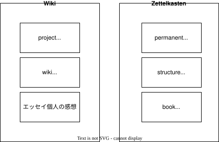
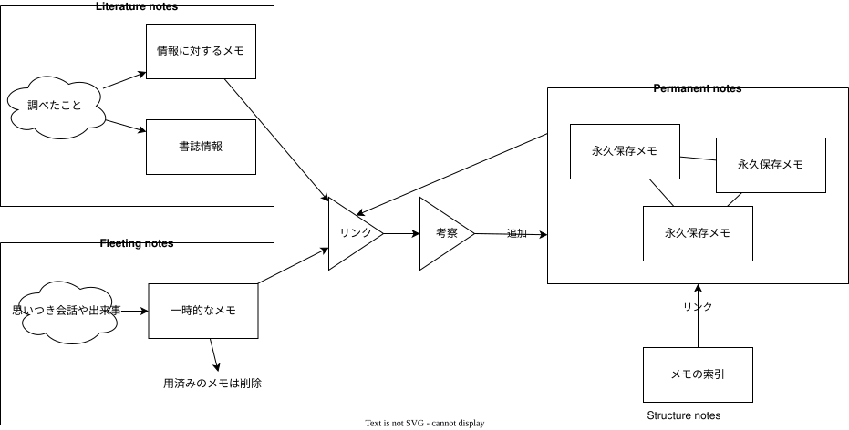
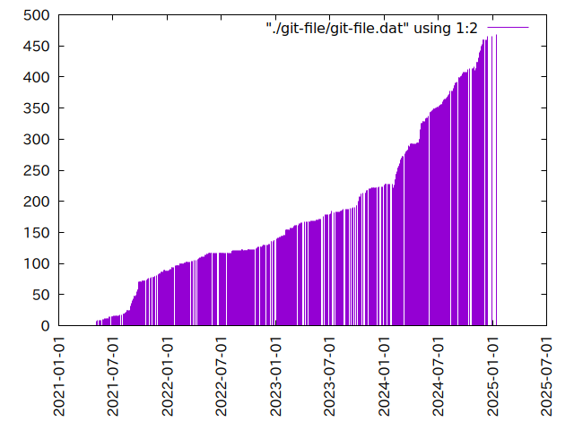
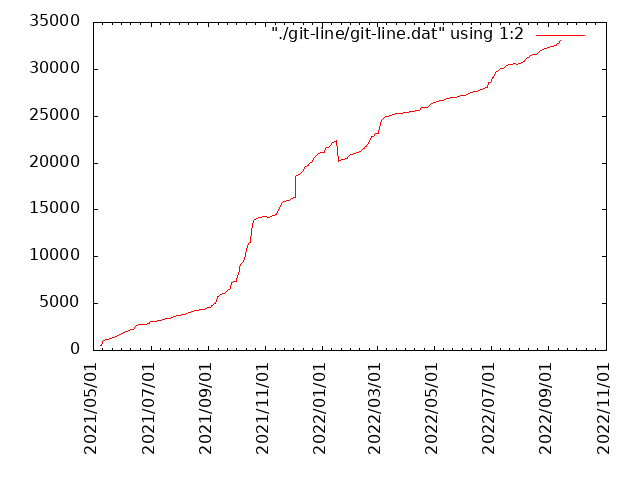

Insomnia
概要
このドキュメントはプログラム関連の文書シリーズである。この文書の目的は主に3つある。
プログラマとして直面した雑事を記録して未来の問題解決に利用すること
過去詰まったのと同じ問題にあたることはよくあるので、記録しておくとすぐ辿り着いて解決できる可能性が高まる。ググるだけだと、検索順位が変わったり検索ワードを忘れて、二度とたどりつけなくなることが多かった。また、よりよい方法を思いついたときにすでにベースがあると少しつづ改良する基盤にできる。
得たことを 大量に 収集する保存場所
人は大量に集まったものをすごい、熱意があると考える傾向がある。自身の行動も例外でなく、量を前にして自分はそれが好きなのだと錯覚していく。熱意は生まれ持ったものでなく、自分から迎えに行くものだと考えている。量はさらなるモチベーションを生み出し、より収集し、より好きになる循環が生まれる。そうして徐々に錯覚でなく本物になっていく。だから集める。大量に収集するにはそれなりに構造化し、整理した状態を保つ必要がある。
新しいアイデア・洞察を得る
ものごとを整理し、着想を得る基盤にする。新しいアイデアといっても、組み合わせにすぎない。しかし組み合わせるためには既存のものを整理し本質をよく理解しておくことが必要であり、そのための準備をする。
すべて自分のためである。しかし未来の自分は他人なので、文脈を共有しない他人が見て理解できるように書く。
作成者の情報。
| 氏名 | 貴島 大悟 Kijima Daigo |
| 生年月日 | 1998-03-28 |
| 居住地 | 東京 |
| 最終学歴 | 鹿児島大学 法文学部 |
| GitHub | kijimaD |
関連リンク。
KDOC
ナンバリングした、1エントリで完結する文章。
🖼️ ドラフト
作成途中。
- KDOC 192: 『Write Great Code Vol.1』
- KDOC 289: 『コンパイラとバーチャルマシン』
- KDOC 298: builtinの関数ボディなしの宣言はどうやっているか?
- KDOC 305: 加算と左ビットシフトの実行速度を計測する
- KDOC 307: 乗算と左ビットシフトの実行速度を計測する
- KDOC 308: 市ヶ谷の社 本と活字館を観察する
- KDOC 309: JICA地球ひろばを観察する
- KDOC 310: なぜCの文字列はnull終端なのか?
- KDOC 311: 関数呼び出しをわかりやすく表記する案
- KDOC 312: 汎整数拡張を確かめる
- KDOC 313: CPUのビット数はレジスタのサイズである
- KDOC 314: Cの配列はメモリ効率のため長さを保持していない
- KDOC 315: 文字列は長さを事前に決められないことが多い
- KDOC 316: Goのスライスは長さを保持している
- KDOC 317: Goの文字列は長さを保持している
- KDOC 318: カーネルモジュールをマウントして動作確認するとよい
- KDOC 319: 文字列は特別な扱いをされている
📖 文献メモ
読んだ本のメモ。
- KDOC 3: 『ない仕事の作り方』
- KDOC 36: 『TAKE NOTES!』
- KDOC 40: 『数学書の読みかた』
- KDOC 47: 『低レイヤを知りたい人のためのCコンパイラ作成入門』
- KDOC 50: 『Unity Performance Tuning Bible』
- KDOC 62: 『Billy Lynn’s Long Halftime Walk』
- KDOC 63: 『私はどのようにしてLinuxカーネルを学んだか』
- KDOC 65: 『Go Changes』
- KDOC 69: 『Go compiler intrinsics』
- KDOC 90: 『ゲームシナリオ入門』
- KDOC 91: 『世界一流エンジニアの思考法』
- KDOC 99: 『詳解UNIXプログラミング』
- KDOC 128: 『Goならわかるシステムプログラミング』
- KDOC 129: 『ポインタ理解のためのアセンブリ入門』
- KDOC 132: 『技術書の読書術』
- KDOC 136: 『はじめてのOSコードリーディング』
- KDOC 139: 『Googleのソフトウェアエンジニアリング』
- KDOC 140: 『自作エミュレータで学ぶx86アーキテクチャ』
- KDOC 164: 『Obsidianでつなげる情報管理術』
- KDOC 167: 『CPUの創り方』
- KDOC 169: 『ユーザーストーリーマッピング』
- KDOC 173: 『ガベージコレクションのアルゴリズムと実装』
- KDOC 174: 『位置情報エンジニア養成講座』
- KDOC 177: 『モブプログラミング・ベストプラクティス』
- KDOC 178: 『ディープラーニングAIはどのように学習し、推論しているのか』
- KDOC 179: 『ハロー“Hello, World” OSと標準ライブラリのシゴトとしくみ』
- KDOC 180: 『最短コースでわかる PyTorch ＆深層学習プログラミング』
- KDOC 181: 『Linuxシステムプログラミング』
- KDOC 184: 『イラストでわかるDockerとKubernetes』
- KDOC 188: 『Visual Guide to Slices in Go』
- KDOC 190: 『Rubyのしくみ Ruby Under a Microscope』
- KDOC 192: 『Write Great Code Vol.1』
- KDOC 194: 『32ビットコンピュータをやさしく語る はじめて読む486』
- KDOC 195: 『ディープラーニングがわかる数学入門』
- KDOC 197: 『プリズナー・トレーニング』
- KDOC 198: 『ゼロから作るDeep Learning』
- KDOC 202: 『30日でできる! OS自作入門』
- KDOC 207: 『Unix考古学』
- KDOC 210: 『0と1のコンピュータ世界 バイナリで遊ぼう!』
- KDOC 216: 『文字コードの仕組みと歴史入門: なぜ文字化けは起こるのか』
- KDOC 217: 『基礎からきっちり覚える 機械語入門』
- KDOC 218: 『図解入門 よくわかる 最新 鉄道の技術と仕組み』
- KDOC 223: 『いやげ物』
- KDOC 224: 『親孝行プレイ』
- KDOC 230: 『忘れ去られたCPU黒歴史』
- KDOC 231: 『揚げて炙ってわかるコンピュータのしくみ』
- KDOC 232: 『たのしいバイナリの歩き方』
- KDOC 235: 『郷土LOVE』
- KDOC 236: 『さよなら私』
- KDOC 237: 『マイ仏教』
- KDOC 244: 『エンジニアのためのカンファレンス参加の楽しみ方』
- KDOC 250: 『初心者でも完成させる 個人でのノベルゲーム制作の流れ』
- KDOC 251: 『終戦日記』
- KDOC 252: 『月刊ラムダノート 4-3-9-2024』
- KDOC 255: 『完全教祖マニュアル』
- KDOC 257: 『よいこの君主論』
- KDOC 258: 『ピアリング戦記』
- KDOC 264: 『YARV Maniacs』
- KDOC 274: 『RFCの読み方』
- KDOC 286: 『ブラウザの仕組み』
- KDOC 289: 『コンパイラとバーチャルマシン』
- KDOC 293: 『超例解Linuxカーネルプログラミング』
💿 永続メモ
永続させるメモ。
- KDOC 261: スタックマシンとレジスタマシンにおけるスタックに違いはあるか?
- KDOC 262: レジスタマシンにおけるスタックの使いみち
- KDOC 263: 計算モデルの違いは保存先がレジスタかスタックかの違い
- KDOC 266: レジスタマシンとスタックマシンの使い分けは?
- KDOC 267: レジスタマシンとスタックマシンの命令セットの違いは何か?
- KDOC 268: ほかのスタックマシンで2重スタックマシンになっている例はあるか?
- KDOC 269: レジスタマシンとスタックマシンを比較する
- KDOC 270: 動的型付け言語ではなぜバイトコードにコンパイルすることが多いか?
- KDOC 271: 動的型付け言語が機械語に変換しにくい理由
- KDOC 272: バイトコード変換は型情報が必須ではない
- KDOC 275: まず何を前提にしてマシンを構成しようとしているか
- KDOC 276: なぜパッケージマネージャに実行速度の違いがあるのか?
- KDOC 277: パッケージマネージャの依存関係解決には計算コストがかかる
- KDOC 278: パイプの詰まりを再現する
- KDOC 279: パイプのバッファはいっぱいになるとwriteをブロックする
- KDOC 281: パイプで結合されたプロセスは非同期実行されていることを確かめる
- KDOC 282: 単体だと終了しないプロセスでパイプを使うと終了するのはなぜか?
- KDOC 283: パイプはファイルディスクリプタがクローズされると終了する
- KDOC 284: パイプで結合したプロセスが終了する流れ
- KDOC 285: ほかにReact的なアイデアのプログラムはあるか?
- KDOC 287: バイトコードにメモリサイズが書かれていないことを確認する
- KDOC 290: なぜJITコンパイルが必要なのか?
- KDOC 291: 必要な部分だけコンパイルして両方得るJITコンパイル
- KDOC 296: appendにステップインできないのはなぜか?
- KDOC 297: builtin packageの定義はダミーである
- KDOC 298: builtinの関数ボディなしの宣言はどうやっているか?
- KDOC 299: appendはコンパイルすると消える
- KDOC 300: スライスのcapacityが伸長する様子をデバッガで見る
- KDOC 301: なぜReact Queryを挟むのか?
- KDOC 302: React QueryによってAPIリクエストをキャッシュする
- KDOC 303: React Queryによって状態管理する
- KDOC 304: 加算と乗算どちらが早いか?
- KDOC 305: 加算と左ビットシフトの実行速度を計測する
- KDOC 307: 乗算と左ビットシフトの実行速度を計測する
- KDOC 310: なぜCの文字列はnull終端なのか?
- KDOC 315: 文字列は長さを事前に決められないことが多い
- KDOC 316: Goのスライスは長さを保持している
- KDOC 317: Goの文字列は長さを保持している
- KDOC 318: カーネルモジュールをマウントして動作確認するとよい
🏗 構造化メモ
集積したトピックに対するリンク集。
📝 プロジェクトメモ
プロジェクトのメモ。比較的長い期間取り組むもの、結論が出るとは限らないものを書く。何か気づいたことがあれば別のメモで清書する。
- KDOC 5: fmtを読む
- KDOC 8: レビューツール メモ
- KDOC 11: unitcheckerを読む
- KDOC 13: make2helpを読む
- KDOC 15: Emacs Caskを読む
- KDOC 24: ゲームボーイエミュレータを作る
- KDOC 25: docker progress を読む
- KDOC 27: Cコンパイラを書く
- KDOC 28: 交通シミュレーションゲームを作る
- KDOC 29: Simutransのコードを読む
- KDOC 55: giteaのコードを読んだメモ
- KDOC 56: flagrのコードを読んだメモ
- KDOC 57: sokoban-goを読む
- KDOC 59: ECSを使ってサンプルゲームを作る
- KDOC 66: 通知ビューワを作る
- KDOC 171: PDF本棚を作る
- KDOC 201: スクリーンルーラーを作る
- KDOC 212: バイナリ博物館
- KDOC 221: 郷土資料づくり
- KDOC 238: 他人の博物館を観察して参考にする
✏ エッセイ
日々考えたこと。1つのアイデアを表現する。
- KDOC 1: denoteを使う
- KDOC 2: 仕事場
- KDOC 4: テッキーな人たち
- KDOC 6: 教育サービス会社を退職した
- KDOC 7: ドローン・地図関係の会社に入社した
- KDOC 9: 上には上のオタクがいる
- KDOC 10: より理解するための基準
- KDOC 12: 出力することで理解を確かにする
- KDOC 14: 外に出てなかった頃の自分へのアドバイス
- KDOC 16: 2022年のまとめ
- KDOC 17: 社外の人と開発するコツ
- KDOC 21: 仕事のように集中する
- KDOC 26: 深く知る
- KDOC 32: 『呪術廻戦』を見た
- KDOC 34: 上京してよかったこと
- KDOC 35: 赤羽を歩いた
- KDOC 37: 達成のしかた。トップダウンvsボトムアップ
- KDOC 38: ツェッテルカステンのやり方
- KDOC 39: ツェッテルカステンとwikiの違いは、考えか事実か
- KDOC 41: 言語仕様書、RFC、数学の難しさは字面通りではないことにある
- KDOC 43: 行き詰まったとき別のことをやるのに罪悪感を感じなくていい
- KDOC 44: 多対多のことに対して落胆するのを克服する
- KDOC 48: 三角関数で単位円を使う理由
- KDOC 51: 1次情報を読む人々
- KDOC 58: 仕事でやるのが一番早い
- KDOC 60: ネット広告がクソな理由
- KDOC 61: 競争と認識することでモチベーションを上げる
- KDOC 64: バトルディッガー編のゲームデザインメモ
- KDOC 67: 2023年のまとめ
- KDOC 68: 好きの程度
- KDOC 70: 聖地巡礼したくなる要素は何か
- KDOC 71: KDOCエントリの書き方
- KDOC 75: 動植物が一切出ない雪山サバイバル映画
- KDOC 77: 検証する方法があると理解が進む
- KDOC 85: 元気に動くUnix on PDP-7を見て連綿と続く歴史を感じた
- KDOC 87: なぜRFCの内容を理解できないのか
- KDOC 92: 何も覚えてなくてショックを覚えた
- KDOC 100: 細かいことを気にせず進める
- KDOC 101: 先にインターフェースを文書化するとやりやすい
- KDOC 102: 応答不可な時間帯を作って集中する
- KDOC 103: ゆるいインターネット断ちのやり方
- KDOC 104: やりたいことが多すぎる
- KDOC 105: 誰かにとってはローカルニュース
- KDOC 110: やりたいことに共通すること
- KDOC 111: tarは Tape Archive の略
- KDOC 112: 何を優先するかが重要
- KDOC 116: コードへの過大評価
- KDOC 117: spacious-padding.elが最高だった
- KDOC 118: ハックできる認知範囲を増やす
- KDOC 119: ベル研究所のショッキングな壁の色
- KDOC 120: Git LFS反映には削除が必要
- KDOC 122: Linuxカーネル知識の全体像を把握する
- KDOC 127: ChromeのPDFビューワでしおりを使う
- KDOC 130: アセンブラの手っ取り早い学び方
- KDOC 134: スライド作りに適した道具
- KDOC 135: スライドのショーケース作り
- KDOC 148: ミンサガリマスターが最高のリマスターだった
- KDOC 149: 一歩引いて考えるためのことば
- KDOC 150: メモに関連を作れない理由
- KDOC 153: すでにあるメモから、関連させられないか考える
- KDOC 154: よくないメモの例
- KDOC 155: 文献メモには内容のメモしか書かないようにする
- KDOC 156: 深く理解できないのは疑問を持たないから
- KDOC 157: 今のメモで足りないこと
- KDOC 158: 記録として書くだけでは意味がない
- KDOC 161: KDOCの目的
- KDOC 166: KDOCは何ではない
- KDOC 168: メモに書く必要のないこと
- KDOC 176: 芸術家が期限内に作品を完成させる方法から学ぶ
- KDOC 193: 共通言語として役立つプログラミング言語
- KDOC 196: 気乗りしない仕事に意味を見出す
- KDOC 199: 文書づくりの仕事で事前に決めておくこと
- KDOC 203: 必要性のある状況が学ばせる
- KDOC 204: 知らない分野の学びかた
- KDOC 209: 新しいものを生み出すためには詳しくなければならない
- KDOC 211: リアルな都市形成シミュレーションゲームに必要な要素
- KDOC 215: 運動習慣を身につけるヒント
- KDOC 219: 腕立て腹筋は難しいことを認識しなければならない
- KDOC 220: 興味を喚起する方法
- KDOC 234: 印刷博物館を観察する
- KDOC 239: 警察博物館を観察する
- KDOC 240: 漱石山房記念館を観察する
- KDOC 242: 鳩山会館を観察する
- KDOC 247: 釣り文化資料館を観察する
- KDOC 248: 東京おもちゃ美術館を観察する
- KDOC 249: 消防博物館を観察する
- KDOC 256: 有害コンテンツをフィルタリングする指針
- KDOC 265: 昭和記念館を観察する
- KDOC 273: 自分で作るときの参考にするつもりで見ると発見がある
- KDOC 288: DNSフィルタリングで有害コンテンツをブロックする
- KDOC 292: 古代オリエント博物館を観察する
- KDOC 306: カタカナで認識していると定着しない
- KDOC 308: 市ヶ谷の社 本と活字館を観察する
- KDOC 309: JICA地球ひろばを観察する
- KDOC 311: 関数呼び出しをわかりやすく表記する案
- KDOC 319: 文字列は特別な扱いをされている
⌨ Wiki
具体的な手順などを記したメモ。
- KDOC 42: EbitenUIで動的に画像を書き換える
- KDOC 45: プログラミング言語の内部的な違いをアセンブリから調べる
- KDOC 46: Goの宣言構文がCと異なる理由
- KDOC 52: Goで構造体がインターフェースを実装しているか確認する
- KDOC 53: Goで独自定義のエラーをconstにする
- KDOC 54: Goのiotaの仕組み
- KDOC 72: org-modeのHTMLエクスポート時に結果だけを表示する
- KDOC 73: odでファイルの中身をN進数で見る
- KDOC 74: The input device is not a TTYを理解する
- KDOC 76: コンテナでLocaleを設定する
- KDOC 78: org-modeで脚注を再割り振りする
- KDOC 79: Localeの標準的な紙のサイズとは
- KDOC 80: 「あ」がどうして343 201 202になるのか
- KDOC 81: iframeの制約
- KDOC 82: errors.Unwrapを読む
- KDOC 83: CORSを確認する
- KDOC 84: いろんなサイトでOPTIONSメソッドを送ったときのレスポンスヘッダーを見る
- KDOC 86: errors.Is()の比較ロジック
- KDOC 88: ファイルの詳細を調べるstatコマンド
- KDOC 89: コアダンプの語源
- KDOC 93: Access-Control-Allow-Headersを調べた
- KDOC 94: 2>&1の意味
- KDOC 95: なぜjson.Unmarshalの引数はバイト列なのか
- KDOC 96: errors.As()の使い方
- KDOC 97: Partial Contentの使いどころ
- KDOC 98: org-roam-node-findでエントリが出なくなったときの直し方
- KDOC 106: Linuxでアーキテクチャ名を調べる
- KDOC 107: システムコールを調べる
- KDOC 108: manのセクション番号を調べる
- KDOC 109: 発行システムコールを調べる
- KDOC 114: IndexedDBの使い道
- KDOC 115: 負の値が関わる剰余挙動の違い
- KDOC 121: Goでローカルパッケージをインストールする
- KDOC 123: HandleFuncとは何か
- KDOC 124: go-dlv.elを使う
- KDOC 125: /procのマニュアルを調べる
- KDOC 126: xxdでファイルをバイナリで見る
- KDOC 131: 今さらOpenAPI v3.1の変更点を知る
- KDOC 137: 簡単にプロセスの使用メモリを確認する
- KDOC 138: Goプロファイラの使いかた
- KDOC 141: Cのポインタ操作をアセンブリで見る
- KDOC 142: データセグメントの使い分けを試す
- KDOC 143: Cの添字記法は単なるシンタックスシュガーである
- KDOC 144: データ型によるサイズの違いを確かめる
- KDOC 145: 見てわかるGoアセンブリの違い
- KDOC 146: org-roam-uiをデプロイした
- KDOC 147: GITHUB_TOKENを使ってgit pushするとトリガーされない
- KDOC 151: Goコンパイラの定数式の埋め込みをみる
- KDOC 152: Dependabotが作ったPRでワークフローが失敗する理由
- KDOC 159: テクスチャとスプライトの違い
- KDOC 160: 見下ろし型2Dゲームにおけるレイキャティングの例
- KDOC 162: セグメンテーションとページングの違い
- KDOC 163: セグメンテーションとページングのユースケース
- KDOC 170: PDFしおりを使いやすくする
- KDOC 172: 関数呼び出しで起きていること
- KDOC 175: ANSIエスケープシーケンスのスタイリングを理解する
- KDOC 182: ブロックサイズの違いによるパフォーマンスへの影響を調べる
- KDOC 183: イメージビルド時にツール側のキャッシュを使う
- KDOC 185: コンテナの中身をホストマシンにダンプして理解する
- KDOC 186: コンテナ実行環境の設定ファイルを見る
- KDOC 187: psでプロセスツリーを見て理解する
- KDOC 189: Goでスライスがどのように保存されているか調べる
- KDOC 191: 仕様を検証するツールも提供するとよい
- KDOC 200: X windowのログを見る
- KDOC 205: エラーと例外の違い
- KDOC 206: バイト数を直感的に把握する
- KDOC 208: 宣言と定義の違い
- KDOC 213: PNG画像のバイナリを眺める
- KDOC 214: テンソルを確認する
- KDOC 222: curlでTLSのバージョン制限を確認する
- KDOC 225: mallocをアセンブラで見る
- KDOC 226: 任意のアドレスに読み書きする
- KDOC 227: フィールド定義の順番によってメモリサイズが変わることがある
- KDOC 228: 変数を書いた順番とアドレスの関係はコンパイラによって異なる
- KDOC 229: 浮動小数点を手計算する
- KDOC 233: Ubuntuでシステムコール番号を調べる
- KDOC 241: jpg画像のバイナリを眺める
- KDOC 243: シフト演算命令に変換されるのを確かめる
- KDOC 245: パックしたデータ型がどのように保存されているか見る
- KDOC 246: 浮動小数点の誤差を体感する
- KDOC 253: GoでN段階に可変長引数を渡す
- KDOC 254: ジョブプロセスがSleepしていた理由
- KDOC 260: プロセスがSleepになるのを再現する
- KDOC 280: パイプで結合されたプロセスは非同期実行されている
- KDOC 294: errorsは標準ライブラリと外部ライブラリで異なる
- KDOC 295: LANでDNSフィルタリングする流れ
- KDOC 312: 汎整数拡張を確かめる
- KDOC 313: CPUのビット数はレジスタのサイズである
構成
このドキュメントはツェッテルカステン ライク な方法で構成する。あとで組み合わせてアイデアを得られるように、取り出しやすい形で整理しておく。

Figure 1: 構成

Figure 2: 作成フロー
参考。
Slides
(require 'cl) (setq urls (mapcar #'file-name-nondirectory (directory-files "./pdfs" t "\\.pdf$")) ) (loop for x in urls do (princ (format "<li><a href='./pdfs/index.html?file=%s'>%s</a></li>\n" x x)))
Repository stat
この文書はkijimaD/roamでバージョン管理されている。リポジトリの統計を図示した。
↓期間ごとで、リポジトリのファイル数を示す2。

Figure 3: Number of files(.org only)
↓期間ごとで、リポジトリの行数を示す。

Figure 4: Number of lines(.org only)
↓org-roam-uiで表示したリッチな関係図。フル画面で見る。
↓実際の数字を数える。この数字を目的にすることはなく、単に客観的に把握するためのメトリクスとして使う。
file_changed_count_day() { datestr_past=$1 datestr_future=$2 count=`git whatchanged --diff-filter=A --since="$datestr_past" --until="$datestr_future"--format=oneline --name-only --pretty=format: | grep -e ".*org" | sort -u | wc -l` printf "%s %s " `date --date "$datestr_past" "+%Y-%m-%d"` $count for (( i = 0; i < $count; i++ )); do printf "%s" "+" done echo } echo ビルド時刻 `TZ=JST-9 date "+%FT%T"` echo .orgファイル数 `find . -maxdepth 1 -type f -name "*.org" | grep -c "\.org$"` echo .orgファイルサイズ `du -h -c ./*.org | tail -n 1 | sed 's/\ttotal//'` echo 画像ファイル数 `find ./images -type f -name "*.png" -o -name "*.svg" | wc -l` echo 画像ファイルサイズ `du -h -c ./images/* | tail -n 1 | sed 's/\ttotal//'` total_multi_count=0 total_line_count=0 for file in ./*.org ; do if [ -f "$file" ]; then multi_count=$(wc -m < "$file") # マルチバイト line_count=$(wc -l < "$file") fi total_multi_count=$((total_multi_count + multi_count)) total_line_count=$((total_line_count + line_count)) done echo echo 文字数 ${total_multi_count}文字 echo 1ページ600文字とすると $((total_multi_count / 600))ページ echo 本1冊300ページとすると $((total_multi_count / 600 / 300))冊 echo 本1冊10万文字とすると $((total_multi_count / 100000))冊 echo 本1冊2cmとすると $((total_multi_count / 100000 * 2))cm echo echo 行数 ${total_line_count}行 echo 60行入るﾃﾞｨｽﾌﾟﾚｲだと $((total_line_count / 60))枚分 echo 14インチﾃﾞｨｽﾌﾟﾚｲだと $((total_line_count / 60 * 17 / 100))メートル echo echo "句点の数" `grep -rohE '。' ./*.org | wc -l` echo "読点の数" `grep -rohE '、' ./*.org | wc -l` echo "改行の数" `grep -rohE '\n' ./*.org | wc -l` echo echo "外部リンクの数" `grep -rohE 'https?://' ./*.org | wc -l` echo "内部リンクの数" `grep -rohE '\[\[id:.+?\]' ./*.org | wc -l` echo "見出し1の数" `grep -rohE '^\*\s+[^\s]' ./*.org | wc -l` echo "見出し2の数" `grep -rohE '^\*\*\s+[^\s]' ./*.org | wc -l` echo "見出し3の数" `grep -rohE '^\*\*\*\s+[^\s]' ./*.org | wc -l` echo "リストの数" `grep -rohE '^-\s+[^\s]' ./*.org | wc -l` echo "脚注の数" `grep -rohE '\[fn:.+?\]' ./*.org | wc -l` echo "挿入画像の数" `grep -rohE '^\[\[file:.+?\]\]' ./*.org | wc -l` echo echo "TODOの数" `grep -rohE '^\*.+?\sTODO' ./*.org | wc -l` echo "DONEの数" `grep -rohE '^\*.+?\sDONE' ./*.org | wc -l` echo "WAITの数" `grep -rohE '^\*.+?\sWAIT' ./*.org | wc -l` echo "WIPの数" `grep -rohE '\*.+?\sWIP' ./*.org | wc -l` echo "ステータスの数" `grep -rohE '^\*.+?\s(TODO|DONE|WAIT|WIP)' ./*.org | wc -l` echo echo "KDOCの数" `ls | grep "\-kdoc\-" | wc -l` echo "ドラフトの数" `ls | grep -E "\-kdoc\-.+?_draft" | wc -l` echo "プロジェクトメモの数" `ls | grep -E "\-kdoc\-.+?_project" | wc -l` echo "wikiの数" `ls | grep -E "\-kdoc\-.+?_wiki" | wc -l` echo "エッセイの数" `ls | grep -E "\-kdoc\-.+?_essay" | wc -l` echo "永続メモの数" `ls | grep -E "\-kdoc\-.+?_permanent" | wc -l` echo "構造化メモの数" `ls | grep -E "\-kdoc\-.+?_structure" | wc -l` echo "文献メモの数" `ls | grep -E "\-kdoc\-.+?_book" | wc -l` echo echo "コミット数" `git rev-list --count HEAD` echo "最初のｺﾐｯﾄ" `git log --date=iso --date=format:"%Y-%m-%dT%H:%M:%S" --pretty=format:"%ad" --reverse | head -n 1` echo "最新のｺﾐｯﾄ" `git log --date=iso --date=format:"%Y-%m-%dT%H:%M:%S" --pretty=format:"%ad" | head -n 1` echo echo "追加ファイル" echo "2年間" `git whatchanged --diff-filter=A --since="2 year ago" --format=oneline --name-only --pretty=format: | grep -e ".*org" | sort -u | wc -l` echo "1年間" `git whatchanged --diff-filter=A --since="1 year ago" --format=oneline --name-only --pretty=format: | grep -e ".*org" | sort -u | wc -l` echo "1ヶ月間" `git whatchanged --diff-filter=A --since="1 month ago" --format=oneline --name-only --pretty=format: | grep -e ".*org" | sort -u | wc -l` echo "1週間" `git whatchanged --diff-filter=A --since="1 week ago" --format=oneline --name-only --pretty=format: | grep -e ".*org" | sort -u | wc -l` file_changed_count_day "1 day ago" "0 day ago" file_changed_count_day "2 days ago" "1 day ago" file_changed_count_day "3 days ago" "2 days ago" file_changed_count_day "4 days ago" "3 days ago" file_changed_count_day "5 days ago" "4 days ago" file_changed_count_day "6 days ago" "5 days ago" file_changed_count_day "7 days ago" "6 days ago" echo echo "MDNの引用数" `grep -rohE 'https://(www\.)?developer\.mozilla\.org' ./*.org | wc -l` echo "RFCの引用数" `grep -rohE 'https://(www\.)?rfc-editor\.org' ./*.org | wc -l` echo "Amazon(日本)の引用数" `grep -rohE 'https://(www\.)?amazon\.co\.jp' ./*.org | wc -l` echo "YouTubeの引用数" `grep -rohE 'https://(www\.)?youtube\.com' ./*.org | wc -l` echo "Wikipediaの引用数" `grep -rohE 'https://(www\.)?(.+)?wikipedia\.org' ./*.org | wc -l`
ビルド時刻 2024-11-29T00:51:17 .orgファイル数 456 .orgファイルサイズ 4.6M 合計 画像ファイル数 51 画像ファイルサイズ 5.5M 合計 文字数 2570612文字 1ページ600文字とすると 4284ページ 本1冊300ページとすると 14冊 本1冊10万文字とすると 25冊 本1冊2cmとすると 50cm 行数 76875行 60行入るﾃﾞｨｽﾌﾟﾚｲだと 1281枚分 14インチﾃﾞｨｽﾌﾟﾚｲだと 217メートル 句点の数 15625 読点の数 10746 改行の数 49639 外部リンクの数 2658 内部リンクの数 907 見出し1の数 1903 見出し2の数 3430 見出し3の数 206 リストの数 7015 脚注の数 120 挿入画像の数 105 TODOの数 553 DONEの数 769 WAITの数 0 WIPの数 4 ステータスの数 1326 KDOCの数 307 ドラフトの数 17 プロジェクトメモの数 20 wikiの数 88 エッセイの数 96 永続メモの数 39 構造化メモの数 1 文献メモの数 62 コミット数 1556 最初のｺﾐｯﾄ 2021-05-09T00:22:00 最新のｺﾐｯﾄ 2024-11-29T00:47:02 追加ファイル 2年間 456 1年間 356 1ヶ月間 86 1週間 21 2024-11-28 6 ++++++ 2024-11-27 5 +++++ 2024-11-26 0 2024-11-25 0 2024-11-24 6 ++++++ 2024-11-23 0 2024-11-22 4 ++++ MDNの引用数 17 RFCの引用数 9 Amazon(日本)の引用数 65 YouTubeの引用数 96 Wikipediaの引用数 264
(format "Built with: %s" (emacs-version))
Built with: GNU Emacs 29.4 (build 1, x86_64-pc-linux-gnu, GTK+ Version 3.24.41, cairo version 1.18.0) of 2024-07-01, modified by Debian
(format "Built with: Org version %s" (org-version))
Built with: Org version 9.6.15
Recent activity
Pomodoro
ポモドーロ統計の図。
This Week by Day
今週の記録。
Daily report:
| File | Timestamp | Tags | Headline | Time | |
|---|---|---|---|---|---|
| ALL | Total time | 0:50 | |||
| 20210615222732-project.org | File time | 0:25 | |||
| Tasks | 0:25 | ||||
| タグを自動追加するツール | 0:25 | ||||
| 20210904124352-workflow.org | File time | 0:25 | |||
| Habit | RepeatTasks | 0:25 | |||
| Habit, Train | Write Entry | 0:25 |
Daily report:
| File | Timestamp | Tags | Headline | Time | |
|---|---|---|---|---|---|
| ALL | Total time | 0:25 | |||
| 20210615222732-project.org | File time | 0:25 | |||
| Tasks | 0:25 | ||||
| タグを自動追加するツール | 0:25 |
This Month
今月の記録。
Monthly report starting on:
| File | Timestamp | Tags | Headline | Time | |
|---|---|---|---|---|---|
| ALL | Total time | 3d 5:34 | |||
| 20210615222732-project.org | File time | 7:30 | |||
| Tasks | 0:50 | ||||
| タグを自動追加するツール | 0:50 | ||||
| Archives | 6:40 | ||||
| トレーディングカードジェネレータ | 6:40 | ||||
| 20210904124352-workflow.org | File time | 1d 3:31 | |||
| Habit | RepeatTasks | 1d 3:31 | |||
| Habit, Train | Write Entry | 22:32 | |||
| Habit, Train | Read Code | 3:20 | |||
| Habit, Train | Read Feed | 1:39 | |||
| 20231128T074518–kdoc-59-ecsを使ってサンプルゲームを作る__project.org | File time | 9:36 | |||
| project | この文書のステータス | 0:25 | |||
| project | Tasks | 8:46 | |||
| project | 接触でイベント発火させる | 8:46 | |||
| project | Archives | 0:25 | |||
| project | VRTを自動コミットさせる | 0:25 | |||
| 20240427T120833–kdoc-141-cのポインタ操作をアセンブリで見る__wiki.org | File time | 1:15 | |||
| wiki | この文書のステータス | 1:15 | |||
| 20240612T133312–kdoc-190-『rubyのしくみ-ruby-under-a-microscope』__book.org | File time | 0:50 | |||
| book | この文書のステータス | 0:50 | |||
| 20240617T152502–kdoc-192-『write-great-code-vol1』__draft_book.org | File time | 5:00 | |||
| draft, book | この文書のステータス | 5:00 | |||
| 20240813T084326–kdoc-221-郷土資料づくり__project.org | File time | 1:40 | |||
| project | この文書のステータス | 1:40 | |||
| 20241009T091810–kdoc-252-『月刊ラムダノート-4-3-9-2024』__book.org | File time | 0:25 | |||
| book | この文書のステータス | 0:25 | |||
| 20241027T201315–kdoc-255-『完全教祖マニュアル』__book.org | File time | 0:25 | |||
| book | 概要 | 0:25 | |||
| 20241102T084716–kdoc-258-『ピアリング戦記』__book.org | File time | 4:36 | |||
| book | この文書のステータス | 4:36 | |||
| 20241102T103338–kdoc-260-プロセスがsleepになるのを再現する__wiki.org | File time | 2:55 | |||
| wiki | この文書のステータス | 2:55 | |||
| 20241103T121759–kdoc-264-『yarv-maniacs』__book.org | File time | 4:10 | |||
| book | この文書のステータス | 4:10 | |||
| 20241105T170010–kdoc-274-『rfcの読み方』__book.org | File time | 4:10 | |||
| book | この文書のステータス | 4:10 | |||
| 20241109T134521–kdoc-278-パイプの詰まりを再現する__permanent.org | File time | 0:50 | |||
| permanent | この文書のステータス | 0:50 | |||
| 20241109T180827–kdoc-283-パイプはファイルディスクリプタがクローズされると終了する__permanent.org | File time | 0:25 | |||
| permanent | この文書のステータス | 0:25 | |||
| 20241115T135633–kdoc-286-『ブラウザの仕組み』__book.org | File time | 0:25 | |||
| book | この文書のステータス | 0:25 | |||
| 20241115T185022–kdoc-288-dnsフィルタリングで有害コンテンツをブロックする__essay.org | File time | 0:25 | |||
| essay | この文書のステータス | 0:25 | |||
| 20241116T014236–kdoc-289-『コンパイラとバーチャルマシン』__draft_book.org | File time | 1:15 | |||
| draft, book | この文書のステータス | 1:15 | |||
| 20241116T171021–kdoc-292-古代オリエント博物館を観察する__essay.org | File time | 0:25 | |||
| essay | この文書のステータス | 0:25 | |||
| 20241117T002732–kdoc-293-『超例解linuxカーネルプログラミング』__book.org | File time | 3:46 | |||
| book | この文書のステータス | 3:46 |
Node Analysis
| Page Rank | Title | Char Count | Commit | Percent | Last Changed |
| 61 | Emacs | 64980 | 141 | 1.7 | 3 weeks ago |
| 43 | Go | 207105 | 144 | 5.42 | 3 weeks ago |
| 38 | Rails | 56746 | 70 | 1.49 | 3 weeks ago |
| 34 | Programming Language | 29766 | 49 | 0.78 | 3 weeks ago |
| 32 | Docker | 58622 | 88 | 1.53 | 3 weeks ago |
| 28 | Ruby | 60059 | 87 | 1.57 | 3 weeks ago |
| 25 | GitHub Actions | 11038 | 16 | 0.29 | 3 weeks ago |
| 24 | Linux | 45363 | 82 | 1.19 | 3 weeks ago |
| 22 | C言語 | 19179 | 27 | 0.5 | 3 weeks ago |
| 20 | JavaScript | 26084 | 29 | 0.68 | 3 weeks ago |
| 19 | GitHub | 5996 | 16 | 0.16 | 3 weeks ago |
| 18 | Git | 6325 | 25 | 0.17 | 3 weeks ago |
| 18 | KDOC 36: 『TAKE NOTES!』 | 8884 | 3 | 0.23 | 3 weeks ago |
| 14 | Java | 1370 | 7 | 0.04 | 3 weeks ago |
| 13 | org-mode | 13982 | 45 | 0.37 | 3 weeks ago |
| 11 | OSS | 10178 | 18 | 0.27 | 3 weeks ago |
| 11 | SQL | 6118 | 21 | 0.16 | 3 weeks ago |
| 10 | Python | 4176 | 13 | 0.11 | 3 weeks ago |
| 10 | TypeScript | 12214 | 24 | 0.32 | 3 weeks ago |
| 9 | KDOC 140: 『自作エミュレータで学ぶx86アーキテクチャ』 | 7418 | 3 | 0.19 | 2 days ago |
| 9 | CI | 1057 | 5 | 0.03 | 3 weeks ago |
| 8 | System Crafters | 2386 | 13 | 0.06 | 3 weeks ago |
| 8 | Rust | 57445 | 47 | 1.5 | 3 weeks ago |
| 8 | OpenAPI | 6835 | 14 | 0.18 | 3 weeks ago |
| 8 | KDOC 59: ECSを使ってサンプルゲームを作る | 147324 | 16 | 3.86 | 1 week ago |
| 7 | Nginx | 3155 | 8 | 0.08 | 3 weeks ago |
| 7 | React | 10894 | 18 | 0.29 | 3 weeks ago |
| 7 | LSP | 1183 | 4 | 0.03 | 3 weeks ago |
| 7 | Redis | 1379 | 3 | 0.04 | 3 weeks ago |
| 7 | KDOC 77: 検証する方法があると理解が進む | 1950 | 3 | 0.05 | 3 weeks ago |
| 7 | RSpec | 4337 | 12 | 0.11 | 3 weeks ago |
| 7 | Emacs Lisp | 55181 | 36 | 1.44 | 3 weeks ago |
| 7 | LISP | 2496 | 27 | 0.07 | 3 weeks ago |
| 7 | MySQL | 711 | 4 | 0.02 | 3 weeks ago |
| 6 | TextLint | 11256 | 21 | 0.29 | 3 weeks ago |
| 6 | KDOC 190: 『Rubyのしくみ Ruby Under a Microscope』 | 64410 | 4 | 1.69 | 3 weeks ago |
| 6 | KDOC 38: ツェッテルカステンのやり方 | 1396 | 6 | 0.04 | 3 weeks ago |
| 6 | KDOC 83: CORSを確認する | 2074 | 1 | 0.05 | 3 weeks ago |
| 6 | RFC | 2186 | 8 | 0.06 | 3 weeks ago |
| 6 | みうらじゅん | 561 | 2 | 0.01 | 3 weeks ago |
| 6 | Simutrans | 11320 | 16 | 0.3 | 3 weeks ago |
| 6 | Org-roam | 17960 | 46 | 0.47 | 1 week ago |
| 6 | Windows | 752 | 2 | 0.02 | 3 weeks ago |
| 5 | KDOC 10: より理解するための基準 | 949 | 1 | 0.02 | 3 weeks ago |
| 5 | KDOC 91: 『世界一流エンジニアの思考法』 | 18508 | 2 | 0.48 | 3 weeks ago |
| 5 | KDOC 210: 『0と1のコンピュータ世界 バイナリで遊ぼう!』 | 11856 | 2 | 0.31 | 3 weeks ago |
| 5 | Shell | 17390 | 46 | 0.46 | 3 weeks ago |
| 5 | KDOC 310: なぜCの文字列はnull終端なのか? | 4473 | 1 | 0.12 | today |
| 5 | KDOC 3: 『ない仕事の作り方』 | 11379 | 5 | 0.3 | 3 weeks ago |
| 5 | game | 9221 | 24 | 0.24 | 3 weeks ago |
| 5 | GNU Guix | 17105 | 51 | 0.45 | 3 weeks ago |
| 5 | Unicode | 719 | 3 | 0.02 | 3 weeks ago |
| 4 | CD | 344 | 3 | 0.01 | 3 weeks ago |
| 4 | KDOC 71: KDOCエントリの書き方 | 9348 | 4 | 0.24 | 3 weeks ago |
| 4 | curl | 2423 | 2 | 0.06 | 3 weeks ago |
| 4 | KDOC 269: レジスタマシンとスタックマシンを比較する | 718 | 1 | 0.02 | 3 weeks ago |
| 4 | KDOC 45: プログラミング言語の内部的な違いをアセンブリから調べる | 1747 | 1 | 0.05 | 3 weeks ago |
| 4 | KDOC 85: 元気に動くUnix on PDP-7を見て連綿と続く歴史を感じた | 2739 | 4 | 0.07 | 3 weeks ago |
| 4 | Scala | 38908 | 13 | 1.02 | 3 weeks ago |
| 4 | KDOC 197: 『プリズナー・トレーニング』 | 10766 | 9 | 0.28 | 1 week ago |
| 4 | CPU | 316 | 2 | 0.01 | 3 weeks ago |
| 4 | magit | 3411 | 17 | 0.09 | 3 weeks ago |
| 4 | HTML | 945 | 7 | 0.02 | 3 weeks ago |
| 4 | KDOC 293: 『超例解Linuxカーネルプログラミング』 | 10707 | 1 | 0.28 | today |
| 4 | Scheme | 1022 | 10 | 0.03 | 3 weeks ago |
| 4 | AWS | 2549 | 8 | 0.07 | 3 weeks ago |
| 4 | Kubernetes | 8493 | 19 | 0.22 | 3 weeks ago |
| 4 | PostgreSQL | 1353 | 5 | 0.04 | 3 weeks ago |
| 4 | Wikipedia | 30640 | 52 | 0.8 | 3 weeks ago |
| 4 | KDOC 129: 『ポインタ理解のためのアセンブリ入門』 | 7714 | 3 | 0.2 | 3 weeks ago |
| 4 | EXWM | 5846 | 13 | 0.15 | 3 weeks ago |
| 3 | parser generator | 681 | 2 | 0.02 | 3 weeks ago |
| 3 | Linter | 11381 | 9 | 0.3 | 3 weeks ago |
| 3 | KDOC 148: ミンサガリマスターが最高のリマスターだった | 1713 | 2 | 0.04 | 3 weeks ago |
| 3 | X Window System | 427 | 3 | 0.01 | 3 weeks ago |
| 3 | KDOC 254: ジョブプロセスがSleepしていた理由 | 3468 | 1 | 0.09 | 3 weeks ago |
| 3 | Yacc | 397 | 2 | 0.01 | 3 weeks ago |
| 3 | ローグライク作り | 122666 | 84 | 3.21 | 3 weeks ago |
| 3 | KDOC 169: 『ユーザーストーリーマッピング』 | 11703 | 2 | 0.31 | 3 weeks ago |
| 3 | Regular Expression | 1450 | 8 | 0.04 | 3 weeks ago |
| 3 | OAuth | 4833 | 9 | 0.13 | 3 weeks ago |
| 3 | KDOC 122: Linuxカーネル知識の全体像を把握する | 1094 | 2 | 0.03 | 3 weeks ago |
| 3 | communication | 2951 | 9 | 0.08 | 3 weeks ago |
| 3 | GNU | 1222 | 4 | 0.03 | 3 weeks ago |
| 3 | KDOC 202: 『30日でできる! OS自作入門』 | 26553 | 2 | 0.69 | 3 weeks ago |
| 3 | C# | 379 | 2 | 0.01 | 3 weeks ago |
| 3 | projectile | 6576 | 9 | 0.17 | 3 weeks ago |
| 3 | KDOC 63: 『私はどのようにしてLinuxカーネルを学んだか』 | 12016 | 3 | 0.31 | 3 weeks ago |
| 3 | KDOC 301: なぜReact Queryを挟むのか? | 704 | 1 | 0.02 | 2 days ago |
| 3 | PHP | 2800 | 12 | 0.07 | 3 weeks ago |
| 3 | KDOC 184: 『イラストでわかるDockerとKubernetes』 | 3433 | 2 | 0.09 | 3 weeks ago |
| 2 | KDOC 41: 言語仕様書、RFC、数学の難しさは字面通りではないことにある | 1697 | 5 | 0.04 | 3 weeks ago |
| 2 | KDOC 103: ゆるいインターネット断ちのやり方 | 3532 | 2 | 0.09 | 3 weeks ago |
| 2 | KDOC 109: 発行システムコールを調べる | 13382 | 1 | 0.35 | 3 weeks ago |
| 2 | Terraform | 1872 | 9 | 0.05 | 3 weeks ago |
| 2 | KDOC 21: 仕事のように集中する | 2233 | 3 | 0.06 | 3 weeks ago |
| 2 | GraphQL | 15450 | 16 | 0.4 | 3 weeks ago |
| 2 | KDOC 42: EbitenUIで動的に画像を書き換える | 1200 | 1 | 0.03 | 3 weeks ago |
| 2 | Apache | 2846 | 2 | 0.07 | 3 weeks ago |
| 2 | roguelike | 1968 | 7 | 0.05 | 3 weeks ago |
| 2 | Ebitengine | 2908 | 3 | 0.08 | 3 weeks ago |
| 2 | Common Lisp | 51731 | 24 | 1.35 | 3 weeks ago |
| 2 | HTTP | 16359 | 4 | 0.43 | 3 weeks ago |
| 2 | KDOC 127: ChromeのPDFビューワでしおりを使う | 1415 | 2 | 0.04 | 3 weeks ago |
| 2 | KDOC 141: Cのポインタ操作をアセンブリで見る | 3625 | 2 | 0.09 | 2 weeks ago |
| 2 | KDOC 47: 『低レイヤを知りたい人のためのCコンパイラ作成入門』 | 14783 | 2 | 0.39 | 3 weeks ago |
| 2 | Make | 1856 | 7 | 0.05 | 3 weeks ago |
| 2 | deploy | 3813 | 7 | 0.1 | 3 weeks ago |
| 2 | KDOC 255: 『完全教祖マニュアル』 | 9384 | 1 | 0.25 | 2 weeks ago |
| 2 | KDOC 4: テッキーな人たち | 4974 | 2 | 0.13 | 3 weeks ago |
| 2 | KDOC 278: パイプの詰まりを再現する | 3797 | 1 | 0.1 | 2 weeks ago |
| 2 | KDOC 192: 『Write Great Code Vol.1』 | 9743 | 10 | 0.26 | 3 days ago |
| 2 | KDOC 213: PNG画像のバイナリを眺める | 7321 | 1 | 0.19 | 3 weeks ago |
| 2 | KDOC 270: 動的型付け言語ではなぜバイトコードにコンパイルすることが多いか? | 1024 | 1 | 0.03 | 3 weeks ago |
| 2 | assembly language | 27333 | 33 | 0.72 | 3 weeks ago |
| 2 | KDOC 12: 出力することで理解を確かにする | 3144 | 1 | 0.08 | 3 weeks ago |
| 2 | Conventional Commits | 2180 | 2 | 0.06 | 3 weeks ago |
| 2 | dotfiles | 19148 | 32 | 0.5 | 3 weeks ago |
| 2 | KDOC 179: 『ハロー“Hello, World” OSと標準ライブラリのシゴトとしくみ』 | 15911 | 2 | 0.42 | 3 weeks ago |
| 2 | KDOC 282: 単体だと終了しないプロセスでパイプを使うと終了するのはなぜか? | 976 | 1 | 0.03 | 2 weeks ago |
| 2 | KDOC 181: 『Linuxシステムプログラミング』 | 16022 | 3 | 0.42 | 3 weeks ago |
| 2 | KDOC 104: やりたいことが多すぎる | 3348 | 4 | 0.09 | 3 weeks ago |
| 2 | KDOC 153: すでにあるメモから、関連させられないか考える | 1132 | 2 | 0.03 | 3 weeks ago |
| 2 | KDOC 110: やりたいことに共通すること | 1381 | 2 | 0.04 | 3 weeks ago |
| 2 | KDOC 256: 有害コンテンツをフィルタリングする指針 | 1815 | 1 | 0.05 | 2 weeks ago |
| 2 | KDOC 17: 社外の人と開発するコツ | 3124 | 2 | 0.08 | 3 weeks ago |
| 2 | KDOC 53: Goで独自定義のエラーをconstにする | 1642 | 1 | 0.04 | 3 weeks ago |
| 2 | compiler | 2100 | 4 | 0.05 | 3 weeks ago |
| 2 | Insomnia | 87440 | 183 | 2.29 | 1 week ago |
| 2 | KDOC 164: 『Obsidianでつなげる情報管理術』 | 1898 | 3 | 0.05 | 3 weeks ago |
| 2 | KDOC 34: 上京してよかったこと | 1070 | 3 | 0.03 | 3 weeks ago |
| 2 | Test | 4749 | 8 | 0.12 | 3 weeks ago |
| 2 | KDOC 207: 『Unix考古学』 | 10358 | 2 | 0.27 | 3 weeks ago |
| 2 | Web Server | 10956 | 16 | 0.29 | 3 weeks ago |
| 2 | KDOC 73: odでファイルの中身をN進数で見る | 10478 | 1 | 0.27 | 3 weeks ago |
| 2 | documentation | 3506 | 9 | 0.09 | 3 weeks ago |
| 2 | Design doc | 13138 | 10 | 0.34 | 3 weeks ago |
| 2 | KDOC 235: 『郷土LOVE』 | 3334 | 2 | 0.09 | 3 weeks ago |
| 2 | KDOC 296: appendにステップインできないのはなぜか? | 548 | 1 | 0.01 | 1 week ago |
| 2 | KDOC 154: よくないメモの例 | 1683 | 2 | 0.04 | 3 weeks ago |
| 2 | DB Design | 10950 | 14 | 0.29 | 3 weeks ago |
| 2 | KDOC 76: コンテナでLocaleを設定する | 3359 | 1 | 0.09 | 3 weeks ago |
| 2 | KDOC 304: 加算と乗算どちらが早いか? | 841 | 1 | 0.02 | 2 days ago |
| 1 | KDOC 297: builtin packageの定義はダミーである | 1605 | 1 | 0.04 | 1 week ago |
| 1 | KDOC 52: Goで構造体がインターフェースを実装しているか確認する | 1501 | 1 | 0.04 | 3 weeks ago |
| 1 | KDOC 234: 印刷博物館を観察する | 2031 | 2 | 0.05 | 3 weeks ago |
| 1 | KDOC 217: 『基礎からきっちり覚える 機械語入門』 | 5121 | 2 | 0.13 | 3 weeks ago |
| 1 | KDOC 99: 『詳解UNIXプログラミング』 | 8464 | 3 | 0.22 | 2 weeks ago |
| 1 | KDOC 147: GITHUB_TOKENを使ってgit pushするとトリガーされない | 2308 | 1 | 0.06 | 3 weeks ago |
| 1 | KDOC 288: DNSフィルタリングで有害コンテンツをブロックする | 2229 | 1 | 0.06 | 1 week ago |
| 1 | KDOC 248: 東京おもちゃ美術館を観察する | 2094 | 2 | 0.05 | 3 weeks ago |
| 1 | KDOC 37: 達成のしかた。トップダウンvsボトムアップ | 2473 | 4 | 0.06 | 3 weeks ago |
| 1 | KDOC 290: なぜJITコンパイルが必要なのか? | 688 | 1 | 0.02 | 1 week ago |
| 1 | Haskell | 67913 | 28 | 1.78 | 3 weeks ago |
| 1 | KDOC 75: 動植物が一切出ない雪山サバイバル映画 | 1936 | 3 | 0.05 | 3 weeks ago |
| 1 | KDOC 137: 簡単にプロセスの使用メモリを確認する | 2245 | 1 | 0.06 | 3 weeks ago |
| 1 | KDOC 126: xxdでファイルをバイナリで見る | 1738 | 1 | 0.05 | 3 weeks ago |
| 1 | Dart | 1068 | 2 | 0.03 | 3 weeks ago |
| 1 | KDOC 102: 応答不可な時間帯を作って集中する | 1961 | 1 | 0.05 | 3 weeks ago |
| 1 | Flutter | 1224 | 4 | 0.03 | 3 weeks ago |
| 1 | Money | 14914 | 9 | 0.39 | 3 weeks ago |
| 1 | Phaser | 571 | 3 | 0.01 | 3 weeks ago |
| 1 | KDOC 58: 仕事でやるのが一番早い | 2024 | 3 | 0.05 | 3 weeks ago |
| 1 | current-word-highlight | 923 | 9 | 0.02 | 3 weeks ago |
| 1 | startup | 1872 | 5 | 0.05 | 3 weeks ago |
| 1 | KDOC 62: 『Billy Lynn’s Long Halftime Walk』 | 1124 | 2 | 0.03 | 3 weeks ago |
| 1 | Heroku | 1521 | 6 | 0.04 | 3 weeks ago |
| 1 | qutebrowser | 446 | 5 | 0.01 | 3 weeks ago |
| 1 | KDOC 195: 『ディープラーニングがわかる数学入門』 | 5735 | 2 | 0.15 | 3 weeks ago |
| 1 | KDOC 272: バイトコード変換は型情報が必須ではない | 1094 | 2 | 0.03 | 2 weeks ago |
| 1 | KDOC 155: 文献メモには内容のメモしか書かないようにする | 1121 | 2 | 0.03 | 3 weeks ago |
| 1 | KDOC 117: spacious-padding.elが最高だった | 671 | 1 | 0.02 | 3 weeks ago |
| 1 | KDOC 106: Linuxでアーキテクチャ名を調べる | 3592 | 1 | 0.09 | 3 weeks ago |
| 1 | memcached | 634 | 3 | 0.02 | 3 weeks ago |
| 1 | KDOC 92: 何も覚えてなくてショックを覚えた | 1675 | 2 | 0.04 | 3 weeks ago |
| 1 | KDOC 46: Goの宣言構文がCと異なる理由 | 1396 | 1 | 0.04 | 3 weeks ago |
| 1 | KDOC 107: システムコールを調べる | 4100 | 1 | 0.11 | 3 weeks ago |
| 1 | KDOC 205: エラーと例外の違い | 4093 | 1 | 0.11 | 3 weeks ago |
| 1 | KDOC 14: 外に出てなかった頃の自分へのアドバイス | 3105 | 2 | 0.08 | 3 weeks ago |
| 1 | KDOC 1: denoteを使う | 1689 | 2 | 0.04 | 3 weeks ago |
| 1 | network | 6033 | 16 | 0.16 | 3 weeks ago |
| 1 | create-link | 9843 | 24 | 0.26 | 3 weeks ago |
| 1 | KDOC 161: KDOCの目的 | 1668 | 2 | 0.04 | 3 weeks ago |
| 1 | KDOC 150: メモに関連を作れない理由 | 1685 | 2 | 0.04 | 3 weeks ago |
| 1 | KDOC 170: PDFしおりを使いやすくする | 1427 | 1 | 0.04 | 3 weeks ago |
| 1 | KDOC 251: 『終戦日記』 | 2938 | 3 | 0.08 | 3 weeks ago |
| 1 | KDOC 201: スクリーンルーラーを作る | 11242 | 3 | 0.29 | 2 weeks ago |
| 1 | KDOC 212: バイナリ博物館 | 2805 | 6 | 0.07 | 2 weeks ago |
| 1 | Entity Component System | 2210 | 4 | 0.06 | 3 weeks ago |
| 1 | Mermaid | 4352 | 8 | 0.11 | 3 weeks ago |
| 1 | KDOC 66: 通知ビューワを作る | 3078 | 3 | 0.08 | 2 weeks ago |
| 1 | KDOC 229: 浮動小数点を手計算する | 5420 | 1 | 0.14 | 3 weeks ago |
| 1 | KDOC 292: 古代オリエント博物館を観察する | 2702 | 1 | 0.07 | 1 week ago |
| 1 | KDOC 305: 加算と左ビットシフトの実行速度を計測する | 7079 | 2 | 0.19 | today |
| 1 | KDOC 230: 『忘れ去られたCPU黒歴史』 | 2728 | 2 | 0.07 | 3 weeks ago |
| 1 | Surveillance | 538 | 3 | 0.01 | 3 weeks ago |
| 1 | Web Browser | 1591 | 9 | 0.04 | 3 weeks ago |
| 1 | 文字エンコーディング | 4151 | 4 | 0.11 | 3 weeks ago |
| 1 | Bison | 661 | 3 | 0.02 | 3 weeks ago |
| 1 | KDOC 81: iframeの制約 | 5940 | 1 | 0.16 | 3 weeks ago |
| 1 | Clojure | 69906 | 13 | 1.83 | 3 weeks ago |
| 1 | KDOC 185: コンテナの中身をホストマシンにダンプして理解する | 2289 | 1 | 0.06 | 3 weeks ago |
| 1 | KDOC 239: 警察博物館を観察する | 3134 | 2 | 0.08 | 3 weeks ago |
| 1 | KDOC 86: errors.Is()の比較ロジック | 6902 | 1 | 0.18 | 3 weeks ago |
| 1 | Zig | 636 | 4 | 0.02 | 3 weeks ago |
| 1 | KDOC 39: ツェッテルカステンとwikiの違いは、考えか事実か | 967 | 3 | 0.03 | 3 weeks ago |
| 1 | Computer Science | 15011 | 22 | 0.39 | 3 weeks ago |
| 1 | ej-dict | 709 | 6 | 0.02 | 3 weeks ago |
| 1 | KDOC 16: 2022年のまとめ | 3251 | 2 | 0.09 | 3 weeks ago |
| 1 | KDOC 264: 『YARV Maniacs』 | 12908 | 1 | 0.34 | 1 week ago |
| 1 | KDOC 87: なぜRFCの内容を理解できないのか | 1736 | 2 | 0.05 | 3 weeks ago |
| 1 | KDOC 177: 『モブプログラミング・ベストプラクティス』 | 10371 | 2 | 0.27 | 3 weeks ago |
| 1 | KDOC 299: appendはコンパイルすると消える | 2483 | 1 | 0.06 | 1 week ago |
| 1 | History | 29590 | 119 | 0.77 | today |
| 1 | RDBMS | 2872 | 7 | 0.08 | 3 weeks ago |
| 1 | KDOC 249: 消防博物館を観察する | 2663 | 2 | 0.07 | 3 weeks ago |
| 1 | CSS | 2030 | 8 | 0.05 | 3 weeks ago |
| 1 | KDOC 40: 『数学書の読みかた』 | 960 | 2 | 0.03 | 3 weeks ago |
| 1 | KDOC 242: 鳩山会館を観察する | 2969 | 3 | 0.08 | 3 weeks ago |
| 1 | KDOC 265: 昭和記念館を観察する | 3557 | 1 | 0.09 | 2 weeks ago |
| 1 | KDOC 226: 任意のアドレスに読み書きする | 4026 | 1 | 0.11 | 3 weeks ago |
| 1 | KDOC 9: 上には上のオタクがいる | 2776 | 1 | 0.07 | 3 weeks ago |
| 1 | KDOC 101: 先にインターフェースを文書化するとやりやすい | 2026 | 2 | 0.05 | 3 weeks ago |
| 1 | Math | 16728 | 16 | 0.44 | 3 weeks ago |
| 1 | KDOC 90: 『ゲームシナリオ入門』 | 47486 | 2 | 1.24 | 3 weeks ago |
| 1 | KDOC 142: データセグメントの使い分けを試す | 4021 | 1 | 0.11 | 3 weeks ago |
| 1 | KDOC 238: 他人の博物館を観察して参考にする | 2075 | 6 | 0.05 | 1 week ago |
| 1 | development | 6650 | 18 | 0.17 | 3 weeks ago |
| 1 | KDOC 24: ゲームボーイエミュレータを作る | 19289 | 2 | 0.5 | 3 weeks ago |
| 1 | Web API | 11766 | 16 | 0.31 | 3 weeks ago |
| 1 | KDOC 247: 釣り文化資料館を観察する | 2038 | 2 | 0.05 | 3 weeks ago |
| 1 | KDOC 167: 『CPUの創り方』 | 2459 | 4 | 0.06 | 3 weeks ago |
| 1 | ECS | 3267 | 4 | 0.09 | 3 weeks ago |
| 1 | KDOC 283: パイプはファイルディスクリプタがクローズされると終了する | 1603 | 1 | 0.04 | 2 weeks ago |
| 1 | KDOC 232: 『たのしいバイナリの歩き方』 | 6455 | 3 | 0.17 | 3 weeks ago |
| 1 | KDOC 162: セグメンテーションとページングの違い | 1761 | 1 | 0.05 | 3 weeks ago |
| 1 | KDOC 157: 今のメモで足りないこと | 2003 | 3 | 0.05 | 3 weeks ago |
| 1 | KDOC 276: なぜパッケージマネージャに実行速度の違いがあるのか? | 929 | 1 | 0.02 | 2 weeks ago |
| 1 | magit-forge | 3991 | 12 | 0.1 | 3 weeks ago |
| 1 | Erlang | 305 | 2 | 0.01 | 3 weeks ago |
| 1 | KDOC 280: パイプで結合されたプロセスは非同期実行されている | 1026 | 1 | 0.03 | 2 weeks ago |
| 1 | KDOC 74: The input device is not a TTYを理解する | 2755 | 1 | 0.07 | 3 weeks ago |
| 1 | KDOC 266: レジスタマシンとスタックマシンの使い分けは? | 688 | 1 | 0.02 | 3 weeks ago |
| 1 | KDOC 240: 漱石山房記念館を観察する | 2940 | 3 | 0.08 | 3 weeks ago |
| 1 | KDOC 2: 仕事場 | 2951 | 2 | 0.08 | 3 weeks ago |
| 1 | Smalltalk | 308 | 2 | 0.01 | 3 weeks ago |
| 1 | KDOC 188: 『Visual Guide to Slices in Go』 | 4374 | 2 | 0.11 | 3 weeks ago |
| 1 | KDOC 166: KDOCは何ではない | 1476 | 2 | 0.04 | 3 weeks ago |
| 1 | KDOC 32: 『呪術廻戦』を見た | 1608 | 4 | 0.04 | 3 weeks ago |
| 1 | KDOC 134: スライド作りに適した道具 | 3259 | 2 | 0.09 | 3 weeks ago |
| 1 | KDOC 68: 好きの程度 | 3546 | 1 | 0.09 | 3 weeks ago |
| 1 | KDOC 158: 記録として書くだけでは意味がない | 1572 | 1 | 0.04 | 3 weeks ago |
| 1 | KDOC 145: 見てわかるGoアセンブリの違い | 2701 | 1 | 0.07 | 3 weeks ago |
| 1 | KDOC 44: 多対多のことに対して落胆するのを克服する | 1713 | 2 | 0.04 | 3 weeks ago |
| 1 | KDOC 261: スタックマシンとレジスタマシンにおけるスタックに違いはあるか? | 759 | 1 | 0.02 | 3 weeks ago |
| 1 | KDOC 156: 深く理解できないのは疑問を持たないから | 1340 | 3 | 0.04 | 3 weeks ago |
| 1 | KDOC 241: jpg画像のバイナリを眺める | 7515 | 1 | 0.2 | 3 weeks ago |
| 1 | KDOC 168: メモに書く必要のないこと | 1006 | 2 | 0.03 | 3 weeks ago |
| 0 | KDOC 225: mallocをアセンブラで見る | 2797 | 1 | 0.07 | 3 weeks ago |
| 0 | KDOC 314: Cの配列はメモリ効率のため長さを保持していない | 4280 | 1 | 0.11 | today |
| 0 | Bucket List | 6987 | 11 | 0.18 | 3 weeks ago |
| 0 | KDOC 93: Access-Control-Allow-Headersを調べた | 4411 | 1 | 0.12 | 3 weeks ago |
| 0 | KDOC 176: 芸術家が期限内に作品を完成させる方法から学ぶ | 1080 | 2 | 0.03 | 3 weeks ago |
| 0 | Inbox | 2468 | 158 | 0.06 | 1 week ago |
| 0 | template | 10521 | 16 | 0.28 | 3 weeks ago |
| 0 | 100knocks | 24579 | 8 | 0.64 | 3 weeks ago |
| 0 | KDOC 252: 『月刊ラムダノート 4-3-9-2024』 | 6895 | 2 | 0.18 | 2 weeks ago |
| 0 | KDOC 309: JICA地球ひろばを観察する | 3662 | 1 | 0.1 | 4 days ago |
| 0 | KDOC 200: X windowのログを見る | 8440 | 1 | 0.22 | 3 weeks ago |
| 0 | KDOC 236: 『さよなら私』 | 8255 | 2 | 0.22 | 3 weeks ago |
| 0 | KDOC 28: 交通シミュレーションゲームを作る | 13778 | 3 | 0.36 | 2 weeks ago |
| 0 | bookmarks | 126254 | 104 | 3.3 | 3 weeks ago |
| 0 | KDOC 246: 浮動小数点の誤差を体感する | 6758 | 1 | 0.18 | 3 weeks ago |
| 0 | Management | 2391 | 3 | 0.06 | 3 weeks ago |
| 0 | KDOC 191: 仕様を検証するツールも提供するとよい | 1579 | 1 | 0.04 | 3 weeks ago |
| 0 | C++ | 1018 | 3 | 0.03 | 3 weeks ago |
| 0 | KDOC 318: カーネルモジュールをマウントして動作確認するとよい | 3992 | 1 | 0.1 | today |
| 0 | KDOC 271: 動的型付け言語が機械語に変換しにくい理由 | 1179 | 1 | 0.03 | 3 weeks ago |
| 0 | KDOC 227: フィールド定義の順番によってメモリサイズが変わることがある | 2754 | 1 | 0.07 | 3 weeks ago |
| 0 | KDOC 268: ほかのスタックマシンで2重スタックマシンになっている例はあるか? | 807 | 1 | 0.02 | 3 weeks ago |
| 0 | KDOC 125: /procのマニュアルを調べる | 2672 | 1 | 0.07 | 3 weeks ago |
| 0 | KDOC 281: パイプで結合されたプロセスは非同期実行されていることを確かめる | 1207 | 1 | 0.03 | 2 weeks ago |
| 0 | KDOC 8: レビューツール メモ | 5742 | 2 | 0.15 | 3 weeks ago |
| 0 | KDOC 306: カタカナで認識していると定着しない | 1818 | 1 | 0.05 | 2 days ago |
| 0 | KDOC 223: 『いやげ物』 | 747 | 3 | 0.02 | 3 weeks ago |
| 0 | KDOC 315: 文字列は長さを事前に決められないことが多い | 3894 | 1 | 0.1 | today |
| 0 | KDOC 70: 聖地巡礼したくなる要素は何か | 5006 | 2 | 0.13 | 3 weeks ago |
| 0 | KDOC 253: GoでN段階に可変長引数を渡す | 3249 | 1 | 0.09 | 3 weeks ago |
| 0 | KDOC 61: 競争と認識することでモチベーションを上げる | 2552 | 2 | 0.07 | 3 weeks ago |
| 0 | Debugger | 2674 | 4 | 0.07 | 3 weeks ago |
| 0 | KDOC 180: 『最短コースでわかる PyTorch ＆深層学習プログラミング』 | 1142 | 1 | 0.03 | 3 weeks ago |
| 0 | KDOC 308: 市ヶ谷の社 本と活字館を観察する | 4875 | 1 | 0.13 | 4 days ago |
| 0 | KDOC 204: 知らない分野の学びかた | 3648 | 2 | 0.1 | 3 weeks ago |
| 0 | Denote Links | 69499 | 136 | 1.82 | today |
| 0 | KDOC 257: 『よいこの君主論』 | 3923 | 1 | 0.1 | 2 weeks ago |
| 0 | KDOC 96: errors.As()の使い方 | 4836 | 1 | 0.13 | 3 weeks ago |
| 0 | KDOC 222: curlでTLSのバージョン制限を確認する | 4836 | 1 | 0.13 | 3 weeks ago |
| 0 | KDOC 35: 赤羽を歩いた | 1023 | 5 | 0.03 | 2 weeks ago |
| 0 | KDOC 163: セグメンテーションとページングのユースケース | 1807 | 2 | 0.05 | 1 week ago |
| 0 | Elixir | 595 | 2 | 0.02 | 3 weeks ago |
| 0 | KDOC 25: docker progress を読む | 4942 | 2 | 0.13 | 3 weeks ago |
| 0 | KDOC 159: テクスチャとスプライトの違い | 3342 | 1 | 0.09 | 3 weeks ago |
| 0 | GeoServer | 738 | 3 | 0.02 | 3 weeks ago |
| 0 | KDOC 135: スライドのショーケース作り | 1075 | 2 | 0.03 | 3 weeks ago |
| 0 | KDOC 136: 『はじめてのOSコードリーディング』 | 1418 | 2 | 0.04 | 3 weeks ago |
| 0 | KDOC 84: いろんなサイトでOPTIONSメソッドを送ったときのレスポンスヘッダーを見る | 18384 | 1 | 0.48 | 3 weeks ago |
| 0 | KDOC 64: バトルディッガー編のゲームデザインメモ | 10432 | 1 | 0.27 | 2 weeks ago |
| 0 | KDOC 88: ファイルの詳細を調べるstatコマンド | 1620 | 1 | 0.04 | 3 weeks ago |
| 0 | KDOC 183: イメージビルド時にツール側のキャッシュを使う | 1537 | 1 | 0.04 | 3 weeks ago |
| 0 | KDOC 319: 文字列は特別な扱いをされている | 4213 | 1 | 0.11 | today |
| 0 | gemat | 4802 | 5 | 0.13 | 3 weeks ago |
| 0 | KDOC 243: シフト演算命令に変換されるのを確かめる | 3106 | 1 | 0.08 | 3 weeks ago |
| 0 | chore | 10714 | 42 | 0.28 | 3 weeks ago |
| 0 | KDOC 152: Dependabotが作ったPRでワークフローが失敗する理由 | 2215 | 2 | 0.06 | 1 week ago |
| 0 | KDOC 285: ほかにReact的なアイデアのプログラムはあるか? | 655 | 1 | 0.02 | 1 week ago |
| 0 | KDOC 300: スライスのcapacityが伸長する様子をデバッガで見る | 1800 | 1 | 0.05 | 1 week ago |
| 0 | KDOC 198: 『ゼロから作るDeep Learning』 | 28978 | 3 | 0.76 | 3 weeks ago |
| 0 | Bootstrap | 739 | 3 | 0.02 | 3 weeks ago |
| 0 | KDOC 132: 『技術書の読書術』 | 3462 | 3 | 0.09 | 3 weeks ago |
| 0 | KDOC 187: psでプロセスツリーを見て理解する | 57153 | 1 | 1.5 | 3 weeks ago |
| 0 | KDOC 114: IndexedDBの使い道 | 2083 | 1 | 0.05 | 3 weeks ago |
| 0 | KDOC 11: unitcheckerを読む | 3150 | 2 | 0.08 | 3 weeks ago |
| 0 | KDOC 294: errorsは標準ライブラリと外部ライブラリで異なる | 3136 | 1 | 0.08 | 1 week ago |
| 0 | KDOC 120: Git LFS反映には削除が必要 | 1563 | 3 | 0.04 | 3 weeks ago |
| 0 | KDOC 260: プロセスがSleepになるのを再現する | 4348 | 1 | 0.11 | 2 weeks ago |
| 0 | KDOC 60: ネット広告がクソな理由 | 2005 | 3 | 0.05 | 3 weeks ago |
| 0 | OpenID Connect | 4696 | 5 | 0.12 | 3 weeks ago |
| 0 | KDOC 144: データ型によるサイズの違いを確かめる | 7759 | 1 | 0.2 | 3 weeks ago |
| 0 | KDOC 48: 三角関数で単位円を使う理由 | 1768 | 3 | 0.05 | 3 weeks ago |
| 0 | KDOC 78: org-modeで脚注を再割り振りする | 2148 | 1 | 0.06 | 3 weeks ago |
| 0 | KDOC 298: builtinの関数ボディなしの宣言はどうやっているか? | 4581 | 2 | 0.12 | 1 week ago |
| 0 | KDOC 29: Simutransのコードを読む | 6253 | 3 | 0.16 | 2 weeks ago |
| 0 | KDOC 206: バイト数を直感的に把握する | 5124 | 1 | 0.13 | 3 weeks ago |
| 0 | KDOC 244: 『エンジニアのためのカンファレンス参加の楽しみ方』 | 2526 | 2 | 0.07 | 3 weeks ago |
| 0 | KDOC 273: 自分で作るときの参考にするつもりで見ると発見がある | 806 | 1 | 0.02 | 2 weeks ago |
| 0 | Elm | 390 | 2 | 0.01 | 3 weeks ago |
| 0 | KDOC 317: Goの文字列は長さを保持している | 4197 | 1 | 0.11 | today |
| 0 | KDOC 5: fmtを読む | 12053 | 2 | 0.32 | 3 weeks ago |
| 0 | KDOC 316: Goのスライスは長さを保持している | 4641 | 1 | 0.12 | today |
| 0 | KDOC 287: バイトコードにメモリサイズが書かれていないことを確認する | 1629 | 1 | 0.04 | 1 week ago |
| 0 | KDOC 131: 今さらOpenAPI v3.1の変更点を知る | 1946 | 1 | 0.05 | 3 weeks ago |
| 0 | KDOC 6: 教育サービス会社を退職した | 3558 | 2 | 0.09 | 3 weeks ago |
| 0 | KDOC 311: 関数呼び出しをわかりやすく表記する案 | 4024 | 1 | 0.11 | 2 days ago |
| 0 | KDOC 143: Cの添字記法は単なるシンタックスシュガーである | 2863 | 1 | 0.07 | 3 weeks ago |
| 0 | KDOC 171: PDF本棚を作る | 4057 | 2 | 0.11 | 2 weeks ago |
| 0 | KDOC 124: go-dlv.elを使う | 1768 | 1 | 0.05 | 3 weeks ago |
| 0 | KDOC 165: メモの課題と対応策 | 1767 | 4 | 0.05 | 3 weeks ago |
| 0 | KDOC 245: パックしたデータ型がどのように保存されているか見る | 4783 | 1 | 0.13 | 3 weeks ago |
| 0 | KDOC 65: 『Go Changes』 | 1631 | 2 | 0.04 | 3 weeks ago |
| 0 | KDOC 189: Goでスライスがどのように保存されているか調べる | 2438 | 1 | 0.06 | 3 weeks ago |
| 0 | KDOC 94: 2>&1の意味 | 4987 | 1 | 0.13 | 3 weeks ago |
| 0 | KDOC 15: Emacs Caskを読む | 23031 | 2 | 0.6 | 3 weeks ago |
| 0 | KDOC 118: ハックできる認知範囲を増やす | 1784 | 2 | 0.05 | 3 weeks ago |
| 0 | WebAssembly | 442 | 2 | 0.01 | 3 weeks ago |
| 0 | KDOC 172: 関数呼び出しで起きていること | 2953 | 1 | 0.08 | 3 weeks ago |
| 0 | KDOC 55: giteaのコードを読んだメモ | 13313 | 4 | 0.35 | 1 week ago |
| 0 | KDOC 100: 細かいことを気にせず進める | 2356 | 2 | 0.06 | 3 weeks ago |
| 0 | KDOC 111: tarは Tape Archive の略 | 2871 | 2 | 0.08 | 3 weeks ago |
| 0 | KDOC 215: 運動習慣を身につけるヒント | 3900 | 2 | 0.1 | 3 weeks ago |
| 0 | KDOC 231: 『揚げて炙ってわかるコンピュータのしくみ』 | 2995 | 2 | 0.08 | 3 weeks ago |
| 0 | KDOC 218: 『図解入門 よくわかる 最新 鉄道の技術と仕組み』 | 2417 | 2 | 0.06 | 3 weeks ago |
| 0 | KDOC 69: 『Go compiler intrinsics』 | 3671 | 2 | 0.1 | 3 weeks ago |
| 0 | project | 95210 | 135 | 2.49 | today |
| 0 | KDOC 115: 負の値が関わる剰余挙動の違い | 1302 | 1 | 0.03 | 3 weeks ago |
| 0 | KDOC 80: 「あ」がどうして343 201 202になるのか | 1875 | 1 | 0.05 | 3 weeks ago |
| 0 | KDOC 209: 新しいものを生み出すためには詳しくなければならない | 2382 | 2 | 0.06 | 3 weeks ago |
| 0 | Learning | 24798 | 34 | 0.65 | 3 weeks ago |
| 0 | KDOC 313: CPUのビット数はレジスタのサイズである | 4330 | 1 | 0.11 | 2 days ago |
| 0 | KDOC 7: ドローン・地図関係の会社に入社した | 2037 | 2 | 0.05 | 3 weeks ago |
| 0 | KDOC 203: 必要性のある状況が学ばせる | 1539 | 3 | 0.04 | 3 weeks ago |
| 0 | KDOC 214: テンソルを確認する | 3170 | 1 | 0.08 | 3 weeks ago |
| 0 | KDOC 105: 誰かにとってはローカルニュース | 1749 | 2 | 0.05 | 3 weeks ago |
| 0 | KDOC 26: 深く知る | 3315 | 3 | 0.09 | 3 weeks ago |
| 0 | KDOC 250: 『初心者でも完成させる 個人でのノベルゲーム制作の流れ』 | 1614 | 3 | 0.04 | 3 weeks ago |
| 0 | KDOC 149: 一歩引いて考えるためのことば | 1242 | 2 | 0.03 | 3 weeks ago |
| 0 | KDOC 267: レジスタマシンとスタックマシンの命令セットの違いは何か? | 675 | 1 | 0.02 | 3 weeks ago |
| 0 | KDOC 193: 共通言語として役立つプログラミング言語 | 1564 | 1 | 0.04 | 3 weeks ago |
| 0 | KDOC 82: errors.Unwrapを読む | 2864 | 1 | 0.07 | 3 weeks ago |
| 0 | KDOC 13: make2helpを読む | 4859 | 2 | 0.13 | 3 weeks ago |
| 0 | KDOC 50: 『Unity Performance Tuning Bible』 | 1233 | 2 | 0.03 | 3 weeks ago |
| 0 | KDOC 312: 汎整数拡張を確かめる | 4271 | 1 | 0.11 | 2 days ago |
| 0 | workflow | 56318 | 422 | 1.47 | 2 days ago |
| 0 | KDOC 79: Localeの標準的な紙のサイズとは | 1758 | 1 | 0.05 | 3 weeks ago |
| 0 | KDOC 178: 『ディープラーニングAIはどのように学習し、推論しているのか』 | 1046 | 2 | 0.03 | 3 weeks ago |
| 0 | KDOC 263: 計算モデルの違いは保存先がレジスタかスタックかの違い | 993 | 1 | 0.03 | 3 weeks ago |
| 0 | KDOC 219: 腕立て腹筋は難しいことを認識しなければならない | 1973 | 2 | 0.05 | 3 weeks ago |
| 0 | KDOC 302: React QueryによってAPIリクエストをキャッシュする | 916 | 1 | 0.02 | 2 days ago |
| 0 | protocol | 4817 | 5 | 0.13 | 3 weeks ago |
| 0 | KDOC 112: 何を優先するかが重要 | 2131 | 1 | 0.06 | 3 weeks ago |
| 0 | KDOC 237: 『マイ仏教』 | 8064 | 2 | 0.21 | 3 weeks ago |
| 0 | KDOC 186: コンテナ実行環境の設定ファイルを見る | 4019 | 1 | 0.11 | 3 weeks ago |
| 0 | KDOC 139: 『Googleのソフトウェアエンジニアリング』 | 32428 | 2 | 0.85 | 3 weeks ago |
| 0 | KDOC 138: Goプロファイラの使いかた | 7061 | 1 | 0.18 | 3 weeks ago |
| 0 | KDOC 51: 1次情報を読む人々 | 1805 | 2 | 0.05 | 3 weeks ago |
| 0 | KDOC 54: Goのiotaの仕組み | 18169 | 1 | 0.48 | 3 weeks ago |
| 0 | KDOC 307: 乗算と左ビットシフトの実行速度を計測する | 6375 | 2 | 0.17 | today |
| 0 | KDOC 27: Cコンパイラを書く | 10468 | 4 | 0.27 | 2 weeks ago |
| 0 | KDOC 289: 『コンパイラとバーチャルマシン』 | 4160 | 3 | 0.11 | 2 days ago |
| 0 | Lua | 555 | 3 | 0.01 | 3 weeks ago |
| 0 | KDOC 123: HandleFuncとは何か | 2044 | 1 | 0.05 | 3 weeks ago |
| 0 | fish | 712 | 3 | 0.02 | 3 weeks ago |
| 0 | KDOC 43: 行き詰まったとき別のことをやるのに罪悪感を感じなくていい | 1780 | 3 | 0.05 | 3 weeks ago |
| 0 | KDOC 108: manのセクション番号を調べる | 3013 | 1 | 0.08 | 3 weeks ago |
| 0 | KDOC 208: 宣言と定義の違い | 8049 | 1 | 0.21 | 3 weeks ago |
| 0 | KDOC 130: アセンブラの手っ取り早い学び方 | 1968 | 1 | 0.05 | 3 weeks ago |
| 0 | KDOC 56: flagrのコードを読んだメモ | 2949 | 3 | 0.08 | 2 weeks ago |
| 0 | KDOC 274: 『RFCの読み方』 | 11623 | 1 | 0.3 | 1 week ago |
| 0 | KDOC 95: なぜjson.Unmarshalの引数はバイト列なのか | 2207 | 1 | 0.06 | 3 weeks ago |
| 0 | Simula | 466 | 2 | 0.01 | 3 weeks ago |
| 0 | KDOC 146: org-roam-uiをデプロイした | 1895 | 1 | 0.05 | 3 weeks ago |
| 0 | KDOC 291: 必要な部分だけコンパイルして両方得るJITコンパイル | 1361 | 1 | 0.04 | 1 week ago |
| 0 | KDOC 160: 見下ろし型2Dゲームにおけるレイキャティングの例 | 1204 | 1 | 0.03 | 3 weeks ago |
| 0 | KDOC 194: 『32ビットコンピュータをやさしく語る はじめて読む486』 | 15971 | 2 | 0.42 | 3 weeks ago |
| 0 | KDOC 151: Goコンパイラの定数式の埋め込みをみる | 4865 | 1 | 0.13 | 3 weeks ago |
| 0 | 通知ビューワを自作する | 25898 | 12 | 0.68 | 3 weeks ago |
| 0 | KDOC 220: 興味を喚起する方法 | 1791 | 3 | 0.05 | 3 weeks ago |
| 0 | KDOC 175: ANSIエスケープシーケンスのスタイリングを理解する | 2264 | 1 | 0.06 | 3 weeks ago |
| 0 | KDOC 199: 文書づくりの仕事で事前に決めておくこと | 7755 | 2 | 0.2 | 3 weeks ago |
| 0 | bracket-lib | 2393 | 3 | 0.06 | 3 weeks ago |
| 0 | KDOC 277: パッケージマネージャの依存関係解決には計算コストがかかる | 1307 | 1 | 0.03 | 2 weeks ago |
| 0 | ML | 294 | 2 | 0.01 | 3 weeks ago |
| 0 | KDOC 67: 2023年のまとめ | 3198 | 3 | 0.08 | 3 weeks ago |
| 0 | CodeIgniter | 2541 | 5 | 0.07 | 3 weeks ago |
| 0 | KDOC 224: 『親孝行プレイ』 | 5950 | 3 | 0.16 | 3 weeks ago |
| 0 | KDOC 228: 変数を書いた順番とアドレスの関係はコンパイラによって異なる | 4573 | 1 | 0.12 | 3 weeks ago |
| 0 | nushell | 747 | 4 | 0.02 | 3 weeks ago |
| 0 | KDOC 57: sokoban-goを読む | 23654 | 3 | 0.62 | 2 weeks ago |
| 0 | ノベルゲーム作り | 5963 | 11 | 0.16 | 3 weeks ago |
| 0 | career | 15241 | 30 | 0.4 | 3 weeks ago |
| 0 | KDOC 182: ブロックサイズの違いによるパフォーマンスへの影響を調べる | 2554 | 1 | 0.07 | 3 weeks ago |
| 0 | Archive | 27578 | 16 | 0.72 | 3 weeks ago |
| 0 | KDOC 258: 『ピアリング戦記』 | 4835 | 1 | 0.13 | 3 weeks ago |
| 0 | KDOC 233: Ubuntuでシステムコール番号を調べる | 5861 | 1 | 0.15 | 3 weeks ago |
| 0 | KDOC 97: Partial Contentの使いどころ | 7085 | 1 | 0.19 | 3 weeks ago |
| 0 | KDOC 295: LANでDNSフィルタリングする流れ | 625 | 1 | 0.02 | 1 week ago |
| 0 | KDOC 174: 『位置情報エンジニア養成講座』 | 1684 | 2 | 0.04 | 3 weeks ago |
| 0 | KDOC 279: パイプのバッファはいっぱいになるとwriteをブロックする | 1308 | 1 | 0.03 | 2 weeks ago |
| 0 | KDOC 98: org-roam-node-findでエントリが出なくなったときの直し方 | 1222 | 1 | 0.03 | 3 weeks ago |
| 0 | KDOC 128: 『Goならわかるシステムプログラミング』 | 2512 | 2 | 0.07 | 3 weeks ago |
| 0 | KDOC 216: 『文字コードの仕組みと歴史入門: なぜ文字化けは起こるのか』 | 4967 | 3 | 0.13 | 3 weeks ago |
| 0 | Racket | 425 | 2 | 0.01 | 3 weeks ago |
| 0 | KDOC 119: ベル研究所のショッキングな壁の色 | 1599 | 2 | 0.04 | 3 weeks ago |
| 0 | KDOC 173: 『ガベージコレクションのアルゴリズムと実装』 | 4094 | 1 | 0.11 | 3 weeks ago |
| 0 | KDOC 275: まず何を前提にしてマシンを構成しようとしているか | 1458 | 1 | 0.04 | 3 weeks ago |
| 0 | OBS | 930 | 8 | 0.02 | 3 weeks ago |
| 0 | KDOC 284: パイプで結合したプロセスが終了する流れ | 1697 | 1 | 0.04 | 2 weeks ago |
| 0 | KDOC 211: リアルな都市形成シミュレーションゲームに必要な要素 | 2049 | 2 | 0.05 | 3 weeks ago |
| 0 | KDOC 121: Goでローカルパッケージをインストールする | 1189 | 1 | 0.03 | 3 weeks ago |
| 0 | KDOC 89: コアダンプの語源 | 1824 | 1 | 0.05 | 3 weeks ago |
| 0 | KDOC 221: 郷土資料づくり | 2156 | 5 | 0.06 | 1 week ago |
| 0 | KDOC 72: org-modeのHTMLエクスポート時に結果だけを表示する | 1982 | 1 | 0.05 | 3 weeks ago |
| 0 | KDOC 303: React Queryによって状態管理する | 1014 | 1 | 0.03 | 2 days ago |
| 0 | KDOC 116: コードへの過大評価 | 1479 | 4 | 0.04 | 3 weeks ago |
| 0 | KDOC 286: 『ブラウザの仕組み』 | 1146 | 1 | 0.03 | 1 week ago |
| 0 | KDOC 262: レジスタマシンにおけるスタックの使いみち | 1107 | 1 | 0.03 | 3 weeks ago |
| 0 | KDOC 196: 気乗りしない仕事に意味を見出す | 1603 | 2 | 0.04 | 3 weeks ago |
Footnotes:
- org-roamが各orgファイルを解釈して、sqliteデータベースを作成する。(Emacs)
- 出力したsqliteデータベースのノード・エッジ情報をjsonに加工する。(Python)
- d3.jsにデータを入れて、無向グラフを描画する。(JavaScript)
Gitリポジトリをコミットごとに調査するスクリプトでデータ取得。GNU Plotでグラフ画像を描画している。